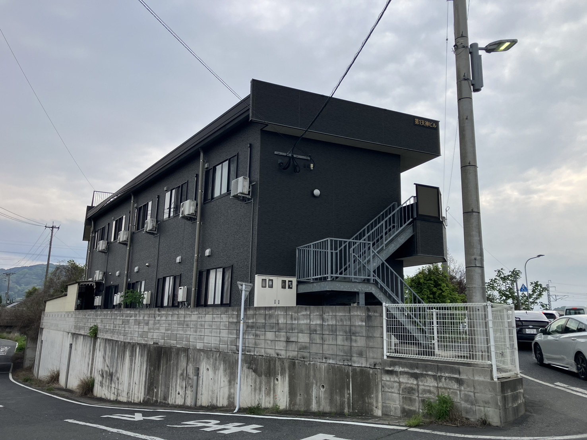

第1天神ビル
グループホーム｜直方市
施設概要

| 施設名 | 第1天神ビル |
|---|---|
| 住所 | 福岡県直方市下新入648-2 |
| 定員 | 2名 |
| 事業種別 | 共同生活援助（グループホーム） |
| 運営 | 社会福祉法人 緑樹会 |
サービス内容
入居者様の自立した生活を支援します
食事の提供・調理支援
入浴・排泄・着替えなどの介護支援
服薬管理・健康状態の確認
日中活動・余暇活動のサポート
外出・買い物の付き添い支援
医療機関・関係機関との連携
生活サポート
日々の暮らしをきめ細かくサポートします
第1天神ビルでは、入居者一人ひとりのペースを大切にしながら、家庭的な雰囲気のなかで共同生活を送っていただけます。スタッフが日常の細かな変化に気づき、早期対応できる体制を整えています。
入居条件
- 障害支援区分の認定を受けている方
- 共同生活を営むことができる方
- 原則として18歳以上の方